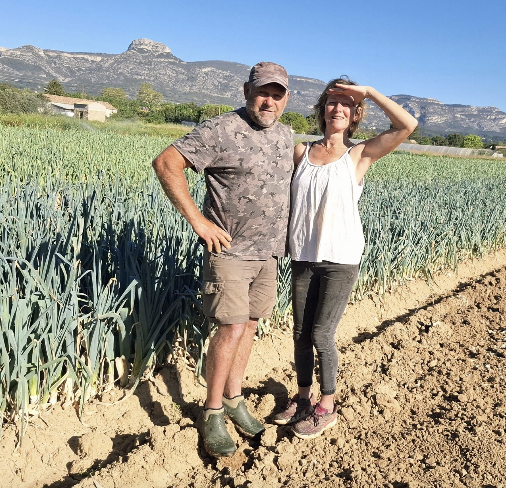
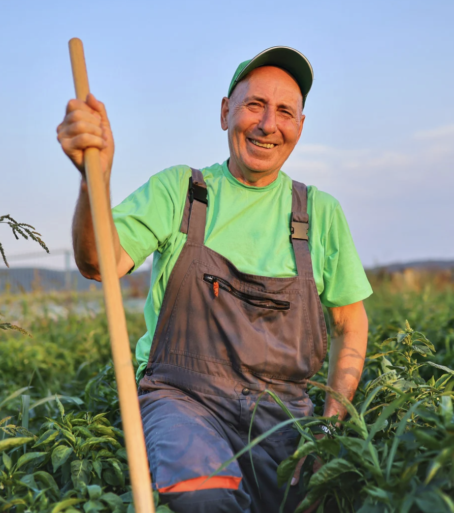

Léon & Sarah

Maraîchers depuis 5 générations
Léon et Sarah sont maraîchers depuis 5 générations, installés à Aubagne à une époque charnière pour la Provence. Travailler avec eux, c'est toucher à l'histoire vivante de notre région.
Leur famille a pris racine dans le sillage d'un événement fondateur : la construction du canal de la Durance au XIXe siècle, qui transforma Marseille et fit fleurir toute la plaine provençale.
Depuis lors, leur façon de cultiver n'a jamais changé. Ils perpétuent les gestes d'autrefois dans le respect total de la terre et des saisons. 🎥 Un reportage exclusif arrive très bientôt !
Rémy est très éthique dans sa façon de cultiver les tomates. Il privilégie des pratiques durables et veille à ce que chaque étape de son processus agricole respecte l'environnement.
De la sélection de graines non-OGM à l'utilisation d'engrais naturels, Thomas s'engage à maintenir la santé du sol et de l'écosystème environnant.
Il prend également soin de minimiser l'utilisation de l'eau, en employant des systèmes d'irrigation goutte-à-goutte pour maximiser l'efficacité.
Rémi Laurent

Notre maraîcher fraises et tomates
Travailler avec nos producteurs, c'est aussi partager des valeurs communes : le respect de la terre, des saisons et du travail bien fait.
Nous achetons directement à nos producteurs, sans intermédiaire, pour une juste rémunération et une fraîcheur maximale.
Fruits et légumes récoltés à maturité, au bon moment, pour un goût authentique et une meilleure qualité nutritionnelle.
Nous soutenons des pratiques respectueuses des sols, de l'eau et de la biodiversité, génération après génération.
Chaque produit régional a une origine connue et vérifiée : vous savez toujours d'où viennent vos fruits et légumes.